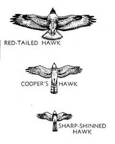
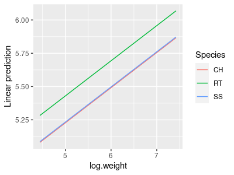

So far we have seen how GLM can model effects of categorical predictors (ANOVA) and numeric predictors (regression). We have also seen that it's easy to extend the GLM to model more than one numeric predictor (multiple regression). Since it's possible to model either categorical or numeric variables with a GLM, and to use more than one predictor at a time, it stands to reason that we should be able to use two predictors in the same model, one of which is categorical and the other of which is numeric. A model like this with a mix of categorical and numeric predictors is called Analysis of Covariance, or ANCOVA.
We usually mix categorical and linear predictors for one of three reasons:
-
To improve a regression analysis. The regression is the scientifically important thing, but there is a grouping in the data that needs to be accounted for. We may need to account for a categorical nuisance variable (greenhouse, growth chamber), or a characteristic of our study organisms (species, sex, age class). Using ANCOVA allows us to have lines with different intercepts for each of the groups, which may fit the data much better than a single line would.
-
To improve an ANOVA. Comparison among categorical treatment group levels is the scientifically important thing, but there is a continuous variable that adds statistical noise to the data that needs to be statistically eliminated. Examples like this often use a measure of initial conditions as a covariate (e.g. initial bacterial density, initial weights of mice, etc.) to compensate for our inability to hold all variables constant. There is often little or no association between the treatment groups and the covariate (that is, there may be no difference on average in the initial conditions between the treatment levels), so the primary effect of including the covariate is to remove random variation from the residual term.
-
To make covariate-adjusted comparisons between groups. Comparison among treatment group levels is the important thing, but can't be done directly because of a confounded variable that we need to adjust for, but can't simply hold constant experimentally. A classic example of this type of analysis is mass-adjusting some feature of interest - using mass as a covariate compensates for our inability to set every individual to the same mass experimentally.
The GLM that we would use is the same in all three cases - we would have a numeric response explained by two predictors, one that is numeric and another that is categorical. The only difference would be in the part of the results on which we focus our attention.
Today we will work on an example of the third case, in which we want to make covariate-adjusted comparisons between groups. Our question will be about differences between three species in their wings and tail lengths, which is complicated by large differences in the size of the species. We will use data from three species of birds of prey, red-tailed hawks (RT), Cooper's hawks (CH), and sharp-shinned hawks (SS), shown in the image to the right. A summary table of the weights (g), wing chords (which measures the length of the longest primary feather to the wrist, and is a standard measure of wing size, in mm), and tail lengths (mm) of these species shows us the following:
Species Weight Wing Tail
1 CH 415.6 243.7 202.6
2 RT 1098.8 386.3 222.8
3 SS 140.1 183.4 145.5
RT are by far the biggest bird in the picture, and not surprisingly RT have the largest means on all three of these variables - as one might expect, big birds have big parts. However, you can see in the picture that RT are shaped very differently than the other two species. RT are in a group of hawks called the buteos that hunt ground-based prey, usually either from a perch or while soaring (soaring is a style of flight in which the wings are held outstretched without flapping, and the birds stay aloft by riding updrafts). In contrast, both CH and SS are accipiters, which hunt by chasing down smaller birds in flight through dense vegetation. Rather than being adapted to soaring, CH and SS need to be highly maneuverable. The illustration certainly makes it appear as though CH and SS have longer tails for their body sizes than RT. The wings of the accipiters also seem to be smaller than RT for their sizes, but the amount of difference is difficult to judge given the differences in overall size of the species - that is, comparison of shapes of the birds is confounded with differences in size.
So, how do we make a comparison of the shapes of the species with respect to their wing and tail dimensions when they differ so much in their overall sizes?
The first thing we should do is define weight as a simple measure of size. As you learned in the experimental design activity, the ideal way to eliminate the confounding effects of a variable is to hold it constant experimentally, but we don't get to set the weights of these birds to desired values. Even if we could find some RT, CH, and SS that were all the same weight they would probably not be normal animals (the RT would be emaciated, and the CH and SS would be obese). But, we can correct for the differences in size by including weight as a covariate, so that we can estimate what the difference in wing and tail lengths between the species would be if we could make them the same size.
Possible outcomes
One possibility is that, despite the impression the picture above gives us, the hawks differ only in size but are the same shape. If this is the case then all three of the hawk species are essentially the same model that is scaled to different sizes. If that were the case, then the wing chords would look like the figure to the right, which shows the red-tailed hawk silhouette magnified to different sizes.
If raptors were all just different magnifications of the same basic model, a regression of wing vs. body would look like the illustration to the right. A single line with a single intercept is fitted through all three of the species, and it fits well. If we adjusted for body mass by calculating the wing chords of each species at the same mass, this would be like sliding the RT and SS points along the line such that their mean body masses are the same as the CH in the middle, and all three would all have the same mass-adjusted wing chords.
So, what would a GLM that included body size and species as predictors show if this is the outcome? Body size is explaining the wing chord well, and we don't need lines with different intercepts to explain the scaling relationship. Adding species as a categorical predictor only helps if we need different intercepts, so including species as a predictor would not be expected to improve the fit - species would not be a significant predictor as long as body size was also included.
But, if raptors aren't just different magnifications of the same basic model, each species might require a different line. If this is true a set of parallel lines would describe the data better than a single line could, like the graph to the right. The implication of using parallel lines is that we are assuming the scaling relationship is the same for every species, but they differ in wing chords at a given body weight - that is, the slope for the lines is the same, and only the intercepts differ. Since the lines are parallel, the difference between the intercepts represents the vertical difference between the lines, which is the same at any body weight. This vertical difference is a mass-adjusted comparison, since it compares what the wing chord would be for each species at a specified body weight.
So, for today, we will analyze the differences between these three species of raptor in their mass-adjusted wing chords, and in their mass-adjusted tail lengths. If we find that the species categorical variable is significant, then we'll conclude that the species are not just different scales of the same model - that is, they have different shapes, and not just different sizes. Once we have established that there is a difference between the species, we can also use our model to estimate wing chords and body lengths of all the species at a common weight - these "least squares means" are then used to interpret how much difference there is between species after accounting for the covariate.
Analyze size-corrected differences in wing chord and body length.
1. Make a new project in R Studio called "ancova". The data set you will analyze is here, and here is the Rmd file - download both into the ancova project folder. Open the Rmd file, and write the commands needed to import the data into a data set called "hawks".
If you open the hawks dataset and look it over, you'll see that there are columns for Species, Weight, Wing, and Tail, as well as some columns indicating the date that the bird was captured and measured, and its age and sex. We won't be using age or sex in this analysis, so the only categorical variable we will have is Species. We should convert Species to a factor (in your Rmd file, on the next line of the import.data code chunk):
hawks$Species <- factor(hawks$Species)
2. Now we are going to look at the data. First you need to load the ggplot2 library (plot.wings chunk of your Rmd file):
library(ggplot2)
ggplot(hawks, aes(x = Weight, y = Wing, color = Species, group = Species)) + geom_point(size = 0.5) + geom_smooth(method = "lm", se = F)
This command is much like the scatterplot with a line through it that we've been using all semester, but by grouping and coloring by Species we get a separate line for each species' data - by making the points smaller you can see the lines better, and you'll see that they don't all seem to have the same slope. This is not surprising, because scaling of body parts is often allometric, meaning that the parts change at different rates. Weight is a volumetric property - the bigger the volume of the animal the heavier it will be - and for any change in a linear dimension the volume increases roughly to that amount cubed.
We can potentially straighten out those lines by plotting axes on a log scale - the log of a number is the exponent needed to raise a base to equal the number. If we use log base 10, then the logs are the exponent needed to raise 10 to equal the number (the log base 10 of 10 is 1, of 100 is 2, of 1000 is 3, and so on). We can set an axis to use a log scale in ggplot with by adding scale_x_log10() or scale_y_log10() to our command. Let's set the x-axis to a log scale first to see if that's enough (add the scale command on to your existing ggplot() command, like so):
ggplot(hawks, aes(x = Weight, y = Wing, color = Species, group = Species)) + geom_point(size = 0.5) + geom_smooth(method = "lm", se = F) + scale_x_log10()
You'll see that CH and SS seem to have the same slope, but RT still do not, so let's set the y-axis to a log scale as well:
ggplot(hawks, aes(x = Weight, y = Wing, color = Species, group = Species)) + geom_point(size = 0.5) + geom_smooth(method = "lm", se = F) + scale_x_log10() + scale_y_log10()
This time the three lines seem to be more or less sharing the same slope, but to each have different intercepts, which is how the model will work when we run our ANCOVA. For the model to fit the data properly, we will want to use the log of wing chord and the log of weight.
3. We can specify a log scale on graph axes easily enough, but if we are going to use the log of wing chord and the log of weight as our variables it's convenient to make log-transformed versions of them. The statistical results will be the same whether we use the log base 10 or natural logs (which are logs for the base e, which is an irrational constant equal to 2.178 for the first three decimal places). In R the log() function is for natural logs, and log10() is for log base 10. We'll go ahead and use natural logs - in the log.transform.wing.weight chunk of your Rmd file enter:
hawks$log.wing <- log(hawks$Wing)
hawks$log.weight <- log(hawks$Weight)
Your hawks dataset should now have 11 variables, the last two of which are log.wing and log.weight
4. Fit a linear model with log wing chord as the response variable, using log of mass and species as predictors (in that order). Call the model "wing.lm" (for "wing chord linear model") - in the wing.ancova.model chunk of your Rmd file enter:
lm(log.wing ~ log.weight + Species, data = hawks) -> wing.lm
To see what is in this lm object, type its name below this line and run the code chunk - you should see:
Call:
lm(formula = log.wing ~ log.weight + Species, data = hawks)
Coefficients:
(Intercept) log.weight SpeciesRT SpeciesSS
3.907536 0.263949 0.202391
0.006265
All that is displayed here is the call (which reproduces the command used), and the coefficients for each term. The intercept is the predicted log.wing for Cooper's hawks with log.weight of 0 - how did we know this? By definition, and intercept is the value of the response when all of the predictors are set to 0 - when SpeciesRT and SpeciesSS are both set to zero the bird is a CH, so the intercept is the expected log.wing for a CH with log.weight of 0.
5. To get our ANOVA table for the model, use (in the wing.ancova.anova.table of your Rmd file):
anova(wing.lm)
The ANOVA table looks like this:
Show in New Window
Analysis of Variance Table
Response: log.wing
Df Sum Sq Mean Sq F
value Pr(>F)
log.weight 1 101.037 101.037 56125.39 < 2.2e-16 ***
Species 2 0.948 0.474 263.17 < 2.2e-16 ***
Residuals 858 1.545 0.002
You'll see that log.weight is a significant predictor, as is Species. This is a case in which we are trying to adjust for the effect of weight as a confounded, nuisance variable, so it should be entered first if we are going to use Type I SS ANOVA. The fact that log.weight is statistically significant supports our choice to account for the effect of weight on wing chord, but all it is telling us scientifically is that wing chord is related to the size of the birds - with a slope of 0.264 we have discovered that bigger birds have bigger wings. Not terribly surprising as a scientific question, but our purpose was to account for the effect of weight on wing chord, rather than to test whether it existed or not.
The predictor we're actually interested in is Species - the fact that Species is significant tells us that there are differences between at least two of the species in their mass-adjusted wing chords, but we can't tell which from the ANOVA table. We can do Tukey comparisons to see which are different from which, and we would like to get predicted log wing chords for the species at the same log weight, so that we can compare them. These predicted log wing chords will be mass-adjusted, least squares means.
To understand what these least squares means represent, let's make a graph that shows them.
6. This graph will be similar to the one you already made, but this time it will graph the wing.lm ANCOVA model - whereas the regression lines in the graph of the data were fairly parallel (because that's how the data are distributed), these lines will be exactly parallel (because that's how the model is constructed). We can use the emmeans library's emmip() command - this is short for "expected marginal mean interaction plot" - in the console type:
library(emmeans)
emmip(wing.lm, Species ~ log.weight, cov.reduce = range)
Your graph will look like this:
The cov.reduce = range argument causes emmip() to give us a range of log.weights on the x-axis so that we can see the lines.
This graph is fine, but it doesn't show the data points - we should only interpret the model if it fits the data well, and plotting the data on the graph helps us confirm that the fit is good. Fortunately, emmip() uses ggplot2 for its graphs, and we can add elements to it by just adding them on as though emmip() was the ggplot() command. Usually we would be able to just use geom_point() to add them without any arguments, but when emmip() graphs a fitted model the variable names are changed. To get the points onto the graph we just need to specify the data and the x and y variables again in the geom_point() command.
To make the graph, put this command into your Rmd file (wing.graph.ancova chunk):
emmip(wing.lm, Species ~ log.weight, cov.reduce = range) + geom_point(data = hawks, aes(x = log.weight, y = log.wing, color = Species)) + geom_vline(xintercept = mean(hawks$log.weight))
The geom_vline() command adds a vertical line that intersects x-axis at the mean of log.weight. Where this vertical line crosses the regression lines for the three species are the least-squares means. Your final graph should look like this:

The Tukey comparisons between these mass-adjusted least-squares means that we will do in the next step will compare the vertical differences between the species lines at the mean of log.weight.
7. We can get Tukey post-hocs for the differences between mass-adjusted least-squares means using the emmeans library (in the wing.tukey chunk of your Rmd file):
emmeans(wing.lm, tukey ~ Species)
There are two parts to the output - first there is an $emmeans block that looks like this:
$emmeans
Species emmean SE df lower.CL upper.CL
CH 5.575 0.006082 858 5.563 5.587
RT 5.778 0.005104 858 5.768 5.788
SS 5.582 0.010419 858 5.561 5.602
Confidence level used: 0.95
These are the expected marginal means (a.k.a. the least squares means) for log wing span, calculated at the mean log weight. Calculating the least squares means at the mean of the covariate is a good choice, because it is where the standard errors will typically be smallest. You can see that RT still have the largest wing span (5.778) after adjusting for mass, but the difference is much smaller than if we hadn't adjusted them - the RT mean slide down its line to the mean log.weight, and both the CH and SS means slid up, which brought the means closer together.
Whether the differences between the species should be interpreted depends on whether the Tukey comparisons are significant - those comparisons are in the next block, and look like this:
$contrasts
contrast estimate SE df t.ratio p.value
CH - RT -0.20239 0.00917 858 -22.072 <.0001
CH - SS -0.00626 0.01006 858 -0.623 0.8077
RT - SS 0.19613 0.01519 858 12.911 <.0001
P value adjustment: tukey method for comparing a family of 3 estimates
The comparisons reported are between the log weight-adjusted means for log of wing chord for each species. Based on these results you'll see that the buteo (RT) is different from the two accipiters (CH and SS), but the two accipiters are not different from one another. This isn't too surprising, since the two accipiters look to be very similar in shape, but differ in size, such that once the size difference has been accounted for there isn't really any difference left between the accipiters.
8. The choice to get least squares means at the mean of weight is a good one, but is it really the best one? The lines are parallel, so the amount of difference between the species will always be the same, but the standard errors are not. We can ask for the least squares means at any value of the mean of log.mass that we want - the default is to calculate them at the mean of the covariate, so we can get that without specifying the value for log.mass (in the wing.lsmeans chunk of your Rmd file):
emmeans(wing.lm, ~Species)
This gives you the same set of least squares means, standard errors, and 95% confidence limits you got with your Tukey tests:
Species emmean SE df lower.CL upper.CL
CH 5.575 0.006082 858 5.563 5.587
RT 5.778 0.005104 858 5.768 5.788
SS 5.582 0.010419 858 5.561 5.602
To get the least squares means calculated at a log.weight of 0 we just need to enter (below your first emmeans() command, same code chunk):
emmeans(wing.lm, ~Species, at = list(log.weight = 0))
which specifies the log.weight we want to use as the at = argument. The output looks like this:
Confidence level used: 0.95
Species emmean SE df lower.CL upper.CL
CH 3.91 0.0430 858
3.82 3.99
RT 4.11 0.0497 858
4.01 4.21
SS 3.91 0.0349 858
3.85 3.98
Not surprisingly, the means are smaller because we're calculating them at a smaller value of log.mass. The differences between the means are all the same, but the standard errors are quite a bit bigger. If we calculated them at a log.weight of 10 (a truly frighteningly large hawk of 22 kg, but for the sake of argument):
emmeans(wing.lm, ~Species, at = list(log.weight = 10))
This gives you the output:
Confidence level used: 0.95
Species emmean SE df lower.CL upper.CL
CH 6.55 0.0289 858
6.49 6.60
RT 6.75 0.0214 858
6.71 6.79
SS 6.55 0.0363 858
6.48 6.62
The amount of difference between the least-squares means is still 0.2 between the accipiters and RT, and around 0.01 between SS and CH (yeah, I know - emmeans() is rounding a bit too much to see this, but the difference is the same). Again, the standard errors are larger than what we get when we estimate the means at the mean of the covariate. Regression estimates are most precise close to the mean of the x-data and the mean of the y-data, because they are not affected by error in the estimate of the slope there.
9. Now that you've worked through the analysis for wing chord, repeat the analysis for tail length (variable Tail). You will probably need to log-transform Tail, like you did Wing - see the Rmd file for prompts for the steps you need to take (make sure you change variable names to reflect that you're using tail length this time!).